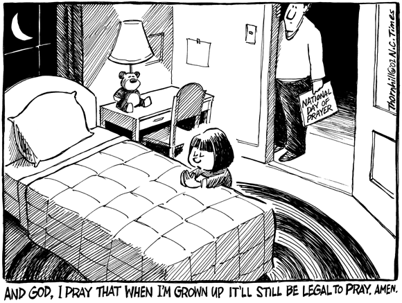

Published
letters: 2001
1986 19871988
19891990
1991 1992
1993 1994
1995
1996
1997 1998
1999 2000 2001HOME
North County Times, January 11, 2001
What is theme of liberal letters writers' dinner?
I read
with interest the Jan. 2 letter reporting the upcoming dinner for liberals
and progressives
who write
on these pages. A nice occasion, I'm sure, akin to a hippie love-in and
flower-stringing
happening.
But I wonder what the heck the focus of the night will be?
Perhaps
the topic is: "How we saddled California residents with an energy crisis
in protecting the
environment."
Will they
extol the virtues of shutting down nuclear power in the past; or of prohibiting
the building
of power
plants for the last decade or so?
Will they
take credit for the imminent bankruptcies of SDG&E/Sempra and others,
who now
promise
thousands of layoffs, and the ripple effect from construction to lenders
to city governments
to stock
portfolios and everyone else?
I guess
they are fulfilled, being comforted by the light of their aromatherapy
candles at night and
fed by
their herb and veggie gardens, and all too happy the rest of us are in
misery due to
dependence
on evil energy sources.
But they
should keep in mind that the flowers they throw before their path are in
jeopardy as well,
with growers
now finding it too much to keep the greenhouses warmed due to soaring costs.
DAN ASHOUR
Oceanside
North County Times, January 22, 2001
Capitalism
to blame for high energy prices
Mr. Dan
Ashour writes on Jan. 11 that it is the environmentalists
who caused
our energy crisis by shutting down nuclear power and
prohibiting
the building of new power plants.
There
is still no system for disposing nuclear waste. It is stored on-site 15
minutes from downtown
Oceanside
and will remain lethal for millennia. Nuclear power will never be a bargain.
No electric-generating
plants have been built in California for 10 years. They were not needed
until
just lately.
Conservation and energy-saving programs had stabilized growth until the
Internet and
other
high-usage industries grew. Also, business had been waiting to see how
electricity
deregulation
would work in our state before building expensive new plants.
After
deregulation, $3 billion was spent by mostly out-of-state energy companies
to buy up current
California
power plants. These companies' profits are now 600 percent and up. The
slash-and-burn
crowd are trying to blame environmental protection as the reason these
wily
capitalists
can steal our money. Anyone who takes the time to do the homework will
see this is
simply
not true. Market manipulation and true capitalism at work are why these
energy companies
are making
a fortune. True conservatives should be rejoicing.
ERIC PARISH
Vista
North County Times, Feb. 15, 2001
Forum presents letter awards
On Jan.
27 the North County Forum held its highly successful Letter to the Editor
Awards Dinner.
The following
awards were presented for letters written during the year 2000: Suzanne
Hill-Strache
received the Best Letter of the Year Award. Ata Agah received the Distinctive
Letter-Writer
of the Year Award and the Best Satirical Letter Award.
Larry
Christy received the Hang Up Your Guns, Boys, Your Food Is at Safeway Award.
Eric
Parish
received the Best Anti-War Letter Award. Joseph Grant received an award
for the Best
Statement
on the Limitations of Tradition.
Sandee
Enriquez received the Uncompassionate Conservatism Award. Harry Titus received
an
award
for the Best Personal Declaration of Liberal Ideals. William Leslie received
an award for
the Best
Logically Reasoned Letter on Capital Punishment.
Bernard
Kopsho received an award for the Best Letter on Separation of Church and
State. Susan
Traugh
received an award for the Best Letter on You Need to Walk a Mile in a Teacher's
Shoes.
Tom Metzger
received
the Worst Letter of the Year Award. Any awardee who was not present at
the dinner
and wishes to receive his certificate can contact me at (760) 789 6314.
RON SELKOVITCH
chairman,
Letters Committee
North
County Forum
North County Times, March 2, 2001
Public schools plot against our kids
Karen Collins
Commentary
Home schooling,
a traditional method of child rearing by which
parents
pass on their morals and prepare their children for
adulthood,
is reclaiming its rightful role as an eminent American
education
institution.
That has
the public schools worried.
Because
ordinary people, without credentials, are exposing the public school system
as
unnecessary
and a waste of taxpayers' dollars, big-money education unions and their
campaign
donors
are conspiring to deprive American citizens of their constitutionally protected
rights. Those
standing
to lose their jobs when home education catches on are encouraging laws
that would allow
home schooling
to be taken over by the government. This deplorable harassment of families
was
revealed
on the floor of the House of Representatives by U.S. Rep. Vernon Ehlers
(R-Mich.) on
Sept.
26, 2000.
Both houses
of Congress have acknowledged the validity and legality of home schooling.
Senate
Resolution
183 was introduced in 1999 and House Resolution 578 in 2000 to recognize
the
superiority
of home schooling over the public school system and to honor those people
who have
refused
to shuck their parental duties onto the U.S. taxpayer. It was also recorded
that home
schooling
was the primary method of education in America until the 1900s. School
officials have
been lying
to people by telling them that home schooling is something new, thereby
attaching
stigmas
to it such as being unauthorized, illegal or not for everybody.
Youngsters
who ride big yellow buses will never learn the truth from their teachers
that America's
public
school system was created by white supremacists in the 1800s as a cultural
genocide
program
to Americanize the hordes of Catholic and non-English speaking immigrants
and conscript
them for
training in a national labor force. Nor will they learn that compelling
students to take
achievement
tests (which determine the income for teachers and school districts) violates
the
constitutional
ban on slavery and involuntary servitude.
Laws that
deny women, ethnic minorities and children their civil rights were abolished
in the 1900s.
The U.S.
Supreme Court ruled in 1925 and again in 1972 that the right of educating
children
belongs
to parents, not to the state. That means California's compulsory school
attendance law, on
the books
since 1874, is unconstitutional.
There is
however, a caveat ---- and it's a big one. As soon as a parent registers
a child with the
local
public school, the right to control the education of the child is forfeited
because custody rights
are voluntarily
transferred. The only way to regain full custody, and hence control over
education,
is to
remove the child from public school.
School
officials who participate in deceiving parents about their child-custody
rights by telling them
school
attendance is required by law are liable for civil rights violations. And
if it is found that such
school
officials were aware that interfering with the lawful custody of a child
is a violation of the
penal
code, they are subject to criminal prosecution. Courts have never granted
school officials
immunity
for child stealing or false imprisonment.
We home-schooling
families are well versed in the Bill of Rights. We support each other and
remain
vigilant against attempts by local school districts to trick people into
thinking that their
home-study
programs, originally intended for expelled or disabled students, are the
same thing as
home schooling.
We will inform people of the truth that parents do not need permission
from
public
school officials to teach their children at home.
People
who want information and legal advice about home schooling can contact
The Home
School
Association of California (www.hsc.org) or The Home School Legal Defense
Association
(www.hslda.org.)
I welcome the opportunity to persuade dissatisfied public school customers
that
as far
as children and parens are concerned, home schooling is a happier way of
life than traversing
the dangers
and deficiencies of the public school system.
Karen Collins
lives in Oceanside. E-mail: kmcollins@home.com
North County Times, March 7, 2001
Letter doesn't help home schooling
What planet
is Karen Collins from ("Public schools plot against our kids," March 2)?
Since when
is home
schooling "exposing the public school system as unnecessary and a waste
of taxpayers'
dollars"?
Home schooling
is an extremely tiny percentage of the public schools, and most likely
will remain
so. Many
families don't have a stay-at-home parent these days. Karen might also
want to go back
to the
library and reread that section on the history of public education in the
United States.
Our system
of free public schooling was not "created by white supremacists in the
1800s as a
cultural
genocide program." Get real. And taking an achievement test does not violate
the
constitutional
ban on slavery, although my son might agree with you on that point.
Putting
her paranoid and delusional thoughts about public schools in print for
everyone to read may
not be
the best way to get her message across that home schooling makes for educational
superiority.
ERIC PARISH
Vista
North County Times, March 23, 2001
Scientists nothing more than social engineers
I was amused by the March 15 article on the supposed greenhouse
effect ("Study: Data point to greenhouse effect"). It seems that the socialists
are still trying to convince us of the existence of global warming.
They state that based on infrared light readings there is less
heat escaping Earth in 1997 than there was in 1970. The problem with their
analysis is that it could be that the Earth is actually cooler.
If the Earth was an ice ball, less heat would escape because
there would be no heat. On the other hand, if the Earth was one big ball
of hot lava, I believe you'd have a lot of heat escaping.
To say that greenhouse gases are insulating the Earth and keeping
the heat in would also mean that they are blocking the heat from the sun.
Sorry, they can't have it both ways.
Of course, the reason for their findings is that (in their opinion)
we are producing too much pollution. They don't mention all the greenhouse
gases from the many active volcanoes around the world.
No, they are hardly scientists. I would call them social engineers.
In a few years, global warming will join theories such as the Earth being
flat.
Daniel J. Prinzing
Encinitas
North County Times, March 24, 2001
Carbon dioxide is the river of life
Recently
some political types have begun calling carbon dioxide (CO2) a pollutant.
Quite the
opposite
is true. Besides being the pop in soda pop and champagne, it is the river
of life to all
plants,
therefore to all animals, too.
The chlorophyll
of green plants takes carbon dioxide and water and, using the energy of
sunlight,
makes
carbohydrates, releasing oxygen back into the air. These carbohydrates
(cellulose, starch
and sugar)
are made for its own purpose until we use them for food, clothing, paper,
wood and
fuel.
Normally
CO2 is about one-tenth of 1 percent in the atmosphere compared with 20
percent
oxygen
and 1 percent useless argon. If plants weren't storing this solar energy
for us to use later,
the Earth
would be a lot hotter.
So the
greenhouse effect worriers have things backward CO2 and storage
by plants cools the
face of
the Earth.
Many years
ago, flying a cub low over the fields and forests of Maryland on sunny
days, I noticed
serious
updrafts over brown plowed fields and downdrafts over the woods, which
were storing
solar
energy instead of transforming it to heat.
JOHN DIXON
Escondido
North County Times, March 29, 2001
Scientific facts on carbon dioxide out of whack
Both Daniel
J. Prinzing (Letters, March 23) and John Dixon (Letters, March 24) seem
to have
their
scientific facts about carbon dioxide wrong. First off, carbon dioxide
absorbs a different
wavelength
of energy than sunlight. So the light energy from the sun has no problem
getting to
Earth.
When that
energy does radiate back as serious updrafts, or heat, it is absorbed more
efficiently by
carbon
dioxide and other greenhouse gases than either oxygen or nitrogen. Works
just like your
car interior.
The glass lets the light energy in but it is better at retaining the heat
energy.
Second,
carbon dioxide is part of the river of life. For each pound of carbon dioxide
photosynthesis
takes in, cellular respiration of all living things will eventually put
out that pound. It's
in balance.
However,
the fossil fuels we now burn are putting carbon dioxide back into the atmosphere
that
took 70
million years to accumulate and have been out of the system for 290 million
years. It is this
flood
of fossil carbon dioxide that now accumulates in our atmosphere, pollutes
it, throws the
natural
balance out of whack and increases the heat just like the inside of your
car.
GARY WAAYERS
Rancho
Bernardo
North County Times, March 29, 2001
Explaining the greenhouse effect
Lately
there have appeared a couple of letters to the editor here demonstrating
a breathtaking lack
of comprehension
regarding the greenhouse effect. Since this is one of the most important
long-term
policy issues facing the human race right now, I thought I'd clarify exactly
how this whole
greenhouse
thing works.
Carbon
dioxide is a greenhouse gas because it has optical characteristics similar
to glass: It
transmits
visible light but absorbs infrared radiation. That is why a parked car,
on a cold, overcast
day, is
so warm inside if the windows are rolled up. Energy enters the car in the
form of visible
light,
gets absorbed when it hits the interior, and is thereby converted to heat.
At normal
Earth temperatures, radiated energy is emitted at infrared wavelengths.
Glass absorbs
infrared.
Greenhouse gases in the atmosphere do exactly the same thing. The sun emits
most of its
radiated
energy as visible light, and greenhouse gases are transparent to light.
That radiation heats
the Earth.
But greenhouse
gases are opaque to infrared, so the Earth cannot reradiate that solar
heat to space
as efficiently.
Consequently, the Earth heats up. That is why global warming is happening.
Most Americans
believe we should be taking proactive measures to avoid the possibly
catastrophic
consequences of pollution-induced climate change.
GEROLD
FIRL
Poway
North County Times, March 30, 2001
Adults in need of better science education
Once again
someone writes a letter debunking global warming by calling scientists
"socialists" while
using
his own brand of "common-sense" science ("Scientists nothing more than
social engineers,"
Daniel
Prinzing, March 23). I quote "To say that greenhouse gases are
insulating the Earth and
keeping
the heat in would also mean that they are blocking the heat from the sun.
Sorry, they can't
have it
both ways."
Sorry,
but that's not the way it works. The visible light from the sun is converted
to infrared heat
radiation
after passing through the atmosphere and striking the Earth. Carbon dioxide
keeps this
infrared
radiation from escaping. That is why it is called the greenhouse effect
in the first place.
It reminds
me of a few years ago when Mark Thornhill, the North County Times cartoonist,
of all
people,
decided he knew enough biology to take on Sir Francis Crick on the subject
of DNA and
evolution.
Sir Crick is the biologist who shared the Nobel Prize for his discovery
of DNA.
The results
of that letter in this paper were almost as laughable as Irvin Forbing's
views on
evolution
and now Daniel Prinzing's insights on global warming. Before we talk of
better education
for our
children, maybe we should look into more and better adult education.
ERIC PARISH
Vista
North County Times, April 1, 2001
Knowledge of scientific principles lacking
In the
words of Ronald Reagan, "There you go again." Another writer who doesn't
have the facts.
Daniel
Prinzing ("Scientists nothing more than social engineers," March 23) obviously
has no
understanding
of heat transfer. The greenhouse effect, which he ridicules, involves infrared
wavelengths
and the thermal properties of absorption, emission, reflection and transmission
of
materials.
Not understanding
those properties, maybe Mr. Prinzing can still explain to me why the air
inside
his car
on a sunny day gets hotter than the air outside the car. Maybe he has never
been in a car on
a sunny
day. Maybe he has never been in a greenhouse on a sunny day, either.
I don't
know what Mr. Prinzing's area of expertise is. It is obviously not English
or he would have
used the
subjunctive mood of the verb "to be" properly. On the other hand, maybe
Mr. Prinzing,
with his
expertise, can explain to me which is the dirty word in his label for scientists
social or
engineer.
MARSHALL
BYER
Bonsall
LA Times
Wednesday, March 28, 2001
Home Edition
Section: Part A
Page: A-1
COLUMN ONE
The Blood of Turtles Stains
Bali
Indonesian
law forbids killing the sea creatures, but no
proper host fails to serve
one. The result is a callous
underground trade.
By: RICHARD C. PADDOCK
TIMES STAFF WRITER
TANJUNG BENOA, Indonesia
-- Time was running out for the
green sea turtles. Four
of them lay on the concrete floor
of a Bali slaughterhouse,
their front flippers tied
together so they couldn't
crawl away. Another lay on its
back, unable to move.
An empty shell, still wet
with blood, rested in a corner
as Soleh the butcher squatted
by an open fire, cooking the
meat of the animal on skewers.
The turtle's destination: a
Hindu celebration at nearby
Udayana University.
In most of the world, green
sea turtles are considered
endangered. Here in Bali,
they are considered a
moneymaker.
Despite the island's image
as a tropical paradise, Bali's
inhabitants slaughter more
endangered sea turtles than
anyone else in the world,
environmentalists say, bringing
the species ever closer
to extinction.
The killing is especially
callous--the turtles are cut
apart while they are alive
to make it easier to extract
the meat from the shell.
Like humans', the eyes of a
turtle can water. While
the animal is being butchered, it
looks as if it's crying.
The trade in green sea turtles
remains a $1-million
business despite a law enacted
by the Indonesian
government in January 1999
making it illegal to catch,
possess or eat the animals.
"It's a very old tradition,
and it's very hard to change,"
said Ketut Sukada, a leading
advocate of turtle hunting.
"It's the wrong solution
to stop people from eating sea
turtles."
In Bali, officials created
a huge loophole by allowing
hunters to catch 5,000 green
sea turtles a year. In
practice, this meant there
was no limit on the number
caught because the quota
was never enforced. Agus
Haryanta, the top enforcement
officer for turtles in Bali,
estimates that the hunters
catch and kill 15,000 to 20,000
a year.
Further threatening the species'
survival, resort hotels
and other buildings constructed
in Bali during the past
three decades have overrun
most of the beaches where
turtles once laid their
eggs.
"Some people say the green
sea turtle is endangered, but I
don't think so," said Widja
Zakaria, one of Bali's biggest
turtle traders. "We try
to hunt the sea turtle only in
areas where there is a lot.
If the numbers are declining,
we move to an area where
there are more."
Bali, the only Indonesian
island that is predominantly
Hindu, enjoys a reputation
for friendliness and
tranquillity. With its grand
tourist resorts and
international airport, it
has escaped much of the violence
that has rocked Indonesia
in recent years. But under the
surface, Bali has its share
of tension.
The bloodletting elsewhere
in the country has kept
tourists away, and the loss
of business has left some
Balinese merchants desperate.
The average monthly wage is
less than $50, and poverty
is widespread. Outside the
tourist centers, villagers
eke out a simple living from
terraced rice paddies. Large
Turtles Mean Good Money
In coastal villages such
as Tanjung Benoa, impoverished
islanders believe it is
their right to harvest nature's
resources, whether by catching
endangered sea turtles or
by using explosives to kill
reef fish. One large turtle
can fetch the equivalent
of more than two months' pay for
an ordinary worker.
In fact, recent attempts
by the authorities to curb the
turtle trade have led to
ugly clashes. In February, a mob
of turtle hunters burned
down the small police station in
Tanjung Benoa, minutes from
the major resort district of
Nusa Dua. Police say they
know who was responsible but
haven't made any arrests
out of fear for their own safety.
"Balinese are very friendly,
but when there is pressure,
they will fight back," said
Putu Lisa, a World Wildlife
Fund staff member who said
she was threatened with rape if
she continued to campaign
for the turtles.
Much of the debate over turtle
hunting revolves around
religion. Balinese Hindus
believe that the turtle is a
sacred animal that supports
the island on its back. Few,
if any, of the turtle hunters
are Hindus--they are mainly
Muslims and Christians who
come from other islands.
According to Balinese Brahman
High Priest Gede Ngurah
Kaleran, the Hindu religion
doesn't require the killing of
any turtles.
The animal's meat isn't used
in Hindu rites, he says. On
rare occasions, turtles
are sacrificed for ceremonies and
their heads are displayed
to symbolize the powerful god
Vishnu. But this use of
turtles comes from a centuries-old
mistake in translating the
scriptures, he said.
In India, where the religion
originated, turtles aren't
sacrificed. In Bali, he
says, priests could use ducks or
pigs in place of turtles.
"In the Hindu religion, there
is no mention of using the
turtles, but of honoring
the family of turtles," the
priest said. "Turtle meat
is not used for the religious
ceremony. It's just for
consumption."
Eating sea turtle is a big
part of Balinese celebrations,
and the Balinese are big
on celebrating. The staging of
elaborate ceremonies with
traditional dress and sacred
rites is a way of keeping
Balinese culture alive in a
predominantly Muslim country.
Every day brings a reason
to party: weddings, pregnancies,
cremations, temple purification,
teeth filing and other
rites of passage. No proper
Balinese host would be caught
without turtle on the table,
a sign of wealth and
prestige.
Turtle lovers say the meat
is delicious and that young
turtle is best of all. Ground
up and mixed with spices
such as chili and black
pepper, it's usually served on
skewers as turtle satay
and goes well with arak, a
Balinese rice wine.
Turtle is also offered daily
at small restaurants and on
street carts in Denpasar,
Bali's capital. Usually it isn't
listed on a menu but is
available to those who ask.
There are seven oceangoing
turtle species, and all are
listed as endangered under
the Convention on International
Trade in Endangered Species.
Indonesia, home to six of the
seven species, signed the
treaty in 1979.
The only kind the Balinese
like to eat is the green sea
turtle.
In existence since the time
of the dinosaurs, the green
can weigh 400 pounds and
measure 3 feet in length. It can
stay underwater for 30 minutes
without coming up for air
and is known to travel 1,400
miles from its feeding
grounds to its nesting site.
Sea turtles face numerous
hazards. Humans have long hunted
the animals for their meat,
shells and leather and
plundered their eggs for
food. At sea, fishing nets trap
and drown them. Coastal
pollution poisons their habitat,
and beachfront construction
destroys their nesting sites.
"I think the hotels are more
dangerous than the
fishermen," said Sukada,
a lecturer in animal husbandry at
Udayana University. "If
it is correct that sea turtles are
going to go extinct, it
is not because of consumption."
If the species does manage
to thrive, the process will be
a slow one. Turtles can
live to be more than 100, but the
female doesn't reach maturity
for 20 to 50 years--and even
then may lay eggs only once
every two to four years. Out
of hundreds of eggs, only
a few survive to adulthood.
Indonesian conservationists
have started turtle breeding
programs on Bali and other
islands, but environmentalists
say it will take decades
for any progress to be evident.
Most of Bali's turtle hunters
base their operations in
Tanjung Benoa, a traditional
fishing village on the
southern end of Bali where
the turtles once nested.
Zakaria, commonly known
as Wewe, owns about a dozen boats
that bring live turtles
from as far away as the islands of
Borneo and Sulawesi to the
Bali market. Often, the hunters
remain at sea for two months
without finding enough
turtles to fill their boats.
Spear Guns, Nets Used for
Capture
One way the hunters catch
a turtle is to swim after it and
shoot it in the hind flipper
with a spear gun. The spear
is tied to a buoy, which
marks the turtle's location. Once
the animal has exhausted
itself trying to get away, the
hunters haul it into a canoe.
More commonly, the hunters
use long nets at night to catch
the turtles when they surface
to breathe.
In 1999, the environmental
group Animal Conservation for
Life counted 9,000 turtles
brought to Tanjung Benoa during
a four-month period. Outraged
foreign visitors began
writing to Gov. Dewa Made
Brata and threatening a tourist
boycott of Bali if the turtle
trade continued. In June, he
canceled the quota of 5,000,
banning turtle hunting
entirely.
In the first major attempt
to crack down on turtle
hunting, authorities seized
one of Wewe's boats with 90
turtles on board when it
returned from a hunting trip in
October. The police took
one of the turtles with them but
left the rest of the evidence
on the boat. When they
returned the following morning,
they found that Wewe had
sold all the turtles. Furious,
the police charged him with
illegally trading in wildlife
and selling the evidence.
Wewe's supporters have mounted
several protests on his
behalf, including one in
February the day before his trial
began, when they burned
down the police station.
Wewe argues that his turtle
business benefits the
environment because it keeps
his employees from engaging
in their previous occupations:
piracy and fishing with
explosives.
Mulyadi, one of Wewe's boat
captains, says that until he
became a turtle hunter,
he would often throw 50 homemade
bombs into the sea in a
day and rake in tons of dead fish.
Now he wonders what job
he could do if he no longer caught
turtles.
"The majority of the sea
turtle hunters are people who
used to bomb," said Mulyadi,
42, who like many Indonesians
goes by only one name. "If
there is another job that can
provide enough income for
me, I will change jobs. But for
now, I can only do this."
Hunters Claim to Be Ignorant of
Ban
Many of the hunters claim
never to have heard that turtles
are endangered or that it
is against the law to catch
them.
"As far as I know, it is
not illegal yet," Mulyadi said.
"No one has told me it is."
Once the turtles are brought
to Bali, they are kept in
plain sight on the beach
for as long as a month in bamboo
pens the size of houses.
At high tide, water comes into
the pens and keeps the animals
alive.
Slaughtering the turtle is
the most brutal part of the
business. If the animal
is killed outright, the meat will
stick to the inside of the
shell, the slaughterers say,
requiring more work to extract
it.
Usually, the turtle lives
for about 10 minutes while it is
cut apart.
"The newly caught sea turtle
is more difficult, since it
struggles quite hard to
get away," said Soleh, the turtle
butcher. "One that has been
in captivity for a while is
easier."
With the crackdown on the
turtle trade, the animals are
usually slaughtered in the
middle of the night.
Soleh said his first step
is to cut off the four flippers.
Then he cuts around the
outside of the shell and opens the
chest, removing all of the
meat. After that, he removes
the internal organs. When
he takes out the heart, it is
still beating.
Wayan Tirtha, a former turtle
hunter, now regrets his part
in the slaughter and tries
to make up for it by working at
a turtle breeding center
in western Bali. He's still
haunted by the sight of
turtles being butchered.
"It's a torture to the sea
turtles because they don't die
right away, even after we
have cut them," said Tirtha, 56.
"It's like killing a human.
The sea turtle can cry. Maybe
if it could speak, it would
ask for mercy."
LA TIMES
Monday, April 2, 2001
Home Edition
Section: Metro
Page: B-6
Sea Turtle Slaughter
My heart was aching after
reading about the slaughter of
endangered sea turtles by
Bali natives (March 28). It is
no wonder that the world
continues to perpetuate misery,
pain and suffering among
its human inhabitants. Until our
circle of compassion includes
all living creatures, we
will never find peace with
our fellow man or within
ourselves.
JAY KARELIUS
Granada Hills
LA Times
Tuesday, April 3, 2001
Home Edition
Section: Metro
Page: B-8
Green Sea Turtles
So what if green sea turtles
are butchered alive ("The
Blood of Turtles Stains
Bali," March 28)? Lobsters are
boiled alive for human consumption.
I know of no fish that
is not sliced up while still
alive. Just because the
fast-food burger was somehow
butchered after its owner was
killed doesn't make it a
different kind of dead meat than
stewed turtle. No matter
the cultural differences, meat is
by definition dead.
ERIC PARISH
Vista
North County Times April 18, 2001
Apologies to China
Since
everyone else seems to be writing "I am sorry" letters to China, I will
add my nickel's worth.
I am sorry
that America is so hypocritical that it calls spy missions off China's
coast routine,
whereas
if China sent a plane within 200 miles of San Diego it would most likely
be blown out of
the sky.
I am sorry that for a country that loves to profess peace we have a military
budget larger
than the
next 10 countries in the world combined and still think it is not enough.
I am sorry
about the ongoing racism of a country that values northern European-looking
white
people
as worth 200 or 300 of anyone else. I am sorry we preach about our God
being on the
side of
truth and righteousness while we give $3 billion a year to Israel so they
can subjugate and
crush
the Palestinian people.
I am sorry
that in a country where 90 percent of the people proclaim to be Christians,
no one
seems
to remember the only thing in the Bible worth remembering is "Do unto others
as you would
have them
do unto you."
ERIC
PARISH
Vista
North County Times April 21, 2001
Spies are already off the San Diego coast
This is
in regard to Mr. Eric Parish's April 18 letter expressing his sorrow to
China regarding the
many failings
of the United States.
Although
I read the entire diatribe listing Mr. Parish's concerns, I had a very
hard time with his first
apology.
Please let me allay his fears about blowing spy missions out of the air
off San Diego's
coast.
Whether
they are in the air or under the water, unfriendly planes, ships and submarines
have been
publicly
known to be off the coast of Point Loma for many, many years.
As a matter
of fact, you can bet that where there is a U.S. military installation,
especially ones of
the caliber
that are in San Diego, the spy-vs.-spy are trying to glean as much information
out of the
air as
possible, and the closer you are to the source, the better.
So, yes,
Mr. Parish, there are occasionally spy planes, submarines and "fishing
trollers" so close to
our installations
that we can read their ID. They are warned out of the area and escorted
back to
international
waters and airspace.
The only
other thing worth commenting on, and one you got 100 percent right, was
the Bible
verbiage,
"Do unto others as you would have them do unto you." That alone was worth
the cost of
the newspaper
print.
ELIZABETH
S. JOHNSON
Poway
North County Times May 3, 2001

North County Times May 10, 2001
Prayer the height of ego-centered arrogance
I found
it sad but predictable that Mark Thornhill would allow that prayer will
someday be illegal
(May 3).
His cartoon
of the little girl praying at her bedside made me almost cry for her poor,
downtrodden,
persecuted
religion. I think it is more likely that not being a member of Mr. Thornhill's
religion will
someday
be illegal if Mr. Thornhill and that Bush guy have anything to say about
it. I did not even
realize
that last Thursday was National Prayer Day, since I am not a member of
an organized
religion
that believes in prayer.
Personally,
prayer sounds rather bizarre. To think that one's pitiful supplications
to a supposedly
almighty
God will come true while another's will be passed over seems the height
of ego-centered
arrogance
to me. Good thing I am not in charge of the North County Times' letters
page. Playing
God sounds
like a tough occupation.
ERIC
PARISH
Vista
North County Times July 9, 2001
Phone call confirms voter's viewpoint
My wife got a phone call today from Stephen Guffanti, one of our Vista
School board members. It seems he wanted to know if her husband would be
interested in joining a letter-writing group to our local newspaper.
My wife explained that I might not be the right person for his
type of viewpoint. I returned Mr. Guffanti's call and was immediately asked
if I realized that 3 of our 5 school board members are owned by the teachers'
union.
I guess this is Mr. Guffanti's standard line. These were also
his first words to my wife.
I tried to explain to Mr. Guffanti that being in the teacher's
union was pretty much the same as being a teacher, and that I was glad
that the majority of the school board were on the side of the teachers'
union, since they are in the same business - teaching kids in Vista. I
got some chuckles and guffaws from Mr. Guffanti. I gathered he thought
I was being humourous by saying that the union represents our teachers.
Anyway, after asking if Mr. Guffanti's children were enrolled
in our public schools, I began to - quote - "waste his time".
I feel very happy that I didn't vote for this guy.
Eric Parish
Vista
North County Times June 23, 2001
Sex education is important to teen's health
Surgeon
General David Satcher issued a report on June 28 urging Americans to respect
sexual
diversity
and to rely on scientific evidence to discover what kinds of sex and birth-control
education
work in reducing unwanted pregnancy and disease.
One thing
he discussed was that nearly half of pregnancies are unwanted. Twelve million
Americans
are infected by sexually transmitted diseases yearly and 20 percent of
all pregnancies
end in
abortions. He mentioned that there is no evidence that sexual orientation
can be changed
and spoke
up about the consequences of harassment on the health of gays and lesbians.
There is
no evidence
that abstinence-only education works at all.
Of course,
this kind of talk infuriates the "just say no to sex" and "God hates gays"
fanatics of the
religious
right, who have never met a fact they couldn't ignore.
Is the
future of our republic to be decided by superstitions shouted by a hate-filled
minority, or by
reasoned
argument based on the best data available?
ERIC
PARISH
Vista
North County Times August 28, 2001
Liberal Vietnam vet resents name-calling
As usual,
the Aug. 20 letter of David York describing all liberals as "poisonous"
was all wet. I
came home
from Vietnam as a first lieutenant and was honored by my liberal friends
and family. I
again
returned from Vietnam, this time as a captain, and was again received warmly
by my liberal
confreres.
When I
returned from Desert Storm, by this time a colonel in the Marines, my politics
(liberal)
were unchanged,
my friends remained intact and constant.
A person
who spits on anyone, service person or no, is a pig, not a liberal. Categorically,
it is
impossible
for a liberal to be a fascist, as liberals are to the left, and fascists
to the right.
In the
flush of lurid name-calling to which Mr. York seems wedded, however, this
is merely one
more splenetic
outpouring that replaces analysis with diatribe. It is the dealing in labels
and
name-calling
rather than discussion of issues that is truly poisonous.
MARK
L. HAIMAN
retired
colonel,
U.S. Marine
Corps
Carlsbad
North County Times September 2, 2001
How can a Marine call himself a liberal?
The Aug.
28 letter# from# retired Marine Col. Mark L. Haiman# causes me to question
whether
the writer
is actually a retired Marine.# How can anyone who spent those years in
the military call
himself
a liberal?
I too
was in the military in those years, to include two years in Vietnam, and
my experiences were
different.
I too was welcomed back by friends and family, but I entered college right
after Vietnam
and there
sure as hell was no warmth demonstrated toward me.#
"Categorically
it is impossible for a liberal to be a fascist, as liberals are to the
left and fascists are
to the
right."# This statement belies a simplistic, not to mention dated, understanding
of the terms.#
At one
time it may have been accurate, but not anymore.# More and more, those
who identify
themselves
as liberals have no qualms about doing things that were once attributed
to fascist
regimes.#
I give as an example the atrocity at Waco in 1993.# If one watched the
congressional
hearings
after the fact, one would notice that the biggest boosters of the massacre
of those people
and the
atrocious conduct of all the federal agencies involved were liberals.#
Those
who questioned what happened and were the most critical were on the right.#
The political
landscape
has changed, Colonel.# Get with the program.
STEPHEN
COOKE
retired
Army major
Fallbrook
North County Times September 10, 2001
Are right-wing politics taught in basic training?
Retired
Maj. Stephen Cooke wonders how a U.S. Marine could possibly call himself
a liberal
(Letters,
Sept. 2). Addressing himself to a letter from Aug. 28 written by retired
Marine Col.
Mark L.
Haiman, Maj. Cooke seems to believe that any and everyone in the U.S. Marines
must
have the
same political beliefs he himself has. Is this how basic training is supposed
to work? He
reminds
me of our evangelical Christian neighbors who can't conceive of anyone
who calls himself
a Christian
voting for a Democrat.
I also
noticed his lamentations for the tragedy in Waco, Texas, in 1993.
Funny
how history seems to change, but I remember David Koresh beginning that
siege by
murdering
four federal agents, men working for the same government as Maj. Cooke.
I also
remember
how it ended, with the new messiah burning alive himself, his compound,
his apostles,
and many
children, 75 people in all. Come to think, he shot himself in the head
before the fire got
to him.
Why is
it that many of the silly right-wing letters to the North County Times
seem to have
Fallbrook
as a return address? Is there something in the water up there?
ERIC
PARISH
Vista
North County Times September 27, 2001
Armed citizens will deter violence
It's a
fact that if you lived in or around New York City at the time of the attack
and you
called
the police because you were being robbed, raped, burgled, there was no
police
available
to you. You were on your own.
Gun sales
are skyrocketing in California because people realize this fact.
It is
also a fact that concealed permits reduce crime.
But government
politicians and bureaucrats continue to promote policies and enact laws
that perpetuate
the ever-growing demographic group of citizen-victims.
Sept.
11 is a testimony to the failure of the FAA and strict gun-law policies
that make
defenseless
victims out of airline passengers and ordinary people.
How many
more disasters will it take before we are allowed to defend ourselves,
and why
does it
take thousands of deaths before armed citizens are allowed to deter the
violence?
WILLIAM
LOLLI
Escondido
North County Times September 27, 2001
Take close look at immigration procedures
As our
nation prepares to fight a new kind of war, a closer look at the lives
and habits of
those
who participated in this attack on our nation is instructive. More important,
a solid
dose of
common sense as we implement the lessons learned in this examination may
hold
the key
to our nation's defense and a successful outcome to this war.
The emerging
terrorist profiles reveal easy access to student or travel visas and use
of
stolen
or false documents - standard operating procedures for illegal immigrants.
Poll after
poll have shown that Joe and Jane Average American want immigration
numbers
restricted and lax immigration practices corrected. But their concerns
have
been trivialized
and they have been demonized for pointing out the problems associated
with 40
years of historically unprecedented high numbers of immigrants.
As transportation
has become faster and cheaper, our immigration policies have become
far more
lax than at any time in our history. As immigration has become a numbers
game,
our protective
agencies have been swamped into ineffectiveness by the sheer volume. Six
million
to 11 million illegal aliens in our nation are as much a proof of this
stalled and
failed
system as is a visit to NYC's ground zero.
BARBARA
VICKROY
Escondido
North County Times October 3,2001
Readers offer ideas on how we should think
I see
it didn¹t take long for some of our ranting regulars to link the tragedy
in New York to their
own pet
ideas on how everyone should think. I refer to Mr. William Lolli (³Armed
citizens will
deter
violence,² Sept. 27) and Ms. Barbara Vickroy (³Take close look
at immigration
procedures,²
Sept. 27).
Mr. Lolli¹s
ideas on gun-totin¹ airline passengers are similar to the ideas some
had a few months
ago of
arming high school teachers and students so they could shoot back at the
nuts who carry
guns on
campus. His idea has the added bonus of explosive decompression onboard
a high-flying
airliner.
Ms. Vickroy,
whose ancestors were obviously the first people ever born in this country,
seeks to
tie in
her distrust of anyone who picks her fruits and vegetables with those other
kinds of nasty
aliens
who use student and travel visas. You know the kind, the educated ones.
I will
also predict that soon Mr. Irvin H. Forbing will disclose what we have
all long suspected
the universe
is only 3 weeks old, and anything that anyone claims happened longer ago
than that
only happened
in the imaginary dreams of an evolutionist.
ERIC
PARISH
Vista
North County Times October 12, 2001
Wise man knows things that are not so
In response
to the Oct. 3 letter, "Reader offers ideas on how we should think," by
Eric Parish: Mr.
Parish
is indeed a wise man. He knows many things, including things that are not
so. No, none of
my ancestors
was born on this continent, including the American Indians. They hail from
Wales,
Germany,
France and Czechoslovakia. And no, I don't mistrust those who pick my food
or travel
to our
country to gain an education. I do mistrust those who break our laws, those
who enable
them,
those who exploit them and those who pander to them.
With 2
million illegal aliens and 2 million legal immigrants in our state, the
worry that some may be
terrorists
is only the most recent concern.
Our social,
natural and physical infrastructures are overwhelmed by the sheer numbers.
With 6
million
students, our schools are reeling, and the education of all but the wealthy
is often
marginalized.
Medical facilities are failing at a rapid rate due to the high number of
uninsured
patients.
However,
the most immediate concern must be the lack of oversight of those who come
on
student
or work visas and then just stay. In an age when financial institutions
can track billions of
dollars
down to the penny, U.S. immigration officials lack a centralized computer
system to track
people
who overstay their visas.
BARBARA
VICKROY
Escondido
North County Times October 27, 2001
Bush's cynical attempt to manipulate kids
I am appalled
at President Bush's idea that American children should send $1 each to
the children
of Afghanistan.
This cynical
attempt to manipulate our children away from the true nature of war is
the most
disgusting,
arrogant, hypocritical and obscene idea I think I have ever seen in all
my years of living
in this
imperialistic, warmongering butcher of a country we call America.
Our children
need to understand that war means that children die. This war is all about
the
wealthiest
and most powerful country on Earth raining death on one of the poorest
a country we
once supported,
a country that has been turned into a cratered wasteland over the last
decade,
where
most people raise goats, live in tents and had nothing to do with Sept.
11. And we expect
our children
to be proud of our bombs? Not my children.
They will
learn the truth, that this country thrives on greed, militarism and a strange
fantasy that
God resembles
an angry Marine drill sergeant and if others don't like it, we have some
B-2
bombers
that can change their minds.
ERIC PARISH
Vista
North County Times October 31, 2001
Those who spout hate teach their kids the same
You really
have to feel sorry for the children of Eric Parish (Letters, Oct. 27).
His children are
growing
up in a household where their father spouts hatred for this country. Mr.
Parish has such
malice
for our country a country that is sending other people's sons
and daughters into harm's
way to
defend him against an evil that wants to kill him and his family
that his children have no
choice
but to think the same way.
If Mr.
Parish continues to express such venomous hatred for this country, his
children will grow up
to join
the jihad. That would probably make him a proud father.
EDWARD
FITZGIBBON
Oceanside
North County Times November 1, 2001
Anti-American rants, from an American
If you
read the Oct. 27 letter from Eric Parish, "Bush's cynical attempt to manipulate
kids," you
can feel
the unhappiness he has in his life along with a twisted point of view.
To fill
his kids with the idea that "this county thrives on greed, militarism"
while continuing to live
here makes
him the biggest hypocrite. "This country" as he states, includes individuals,
like me,
who don't
thrive on greed. I don't have a fantasy that God resembles an angry Marine
drill
sergeant.
But Parish will still teach his children that I do, which also makes him
a liar.
Asking
children to send $1 gives everyone (including children) the option of helping
out in some
way. It
isn't an order, it's a fresh idea for the millions of school-age kids asking
"what can I do?" A
dollar
can't buy much, but 1,000 of them can help a family that is grieving at
this moment, left in a
financial
bind.
This country
isn't perfect, but if you can't see how clear it is that suddenly we aspire
to be patriotic,
to care
about each other, to give our religion another try, to create innovative
ways to raise money
while
digging deep into our pockets to help out, then you are not paying attention,
like Eric Parish.
It's what
you do, Mr. Parish, not what you say.
LIN ALVAREZ
Oceanside
North County Times November 6, 2001
There are times when we must fight evil
It is
true that our country is far from perfect, but we have tried to help so
many countries only to be
stabbed
in the back by them later. How dare Eric Parish (Letters, Oct. 27) call
us an "imperialistic,
warmongering
butcher of a country."
This war
isn't against the Afghan people. This war is against bin Laden, the Taliban
and their
network
of terrorists who seek to oppress people, keep them in poverty and break
their will and
spirit.
They bombed us repeatedly our African embassies, the USS Cole
yet we did little to
stop them.
On Sept. 11, they killed thousands of our people on our soil.
What would
Parish have us do nothing? By doing nothing, we are sending
them and their ilk an
engraved
invitation to ruin our country. That is the truth, not Mr. Parish's anti-American
poison. I
hate war
as well, but there are times, and this is one of them, that we must fight
or evil will spread
like a
cancer. I wish Parish would travel to Afghanistan; then his eyes may be
opened.
God bless
America.
KATHERINE
R. BAKER
Vista
North County Times November 8, 2001
Anti-American statements not welcomed
This letter
is in response to Eric Parish (Letters, Oct. 27) of Vista and others who
have made
statements
against our country.
If you
hate our country and what we've always stood for, would you please move
elsewhere? We
don't
need you in any way, shape or form here.
Our country
may not be perfect, but we're a lot better than most others. I doubt that
Parish even
has the
intelligence to know what "imperialistic" or "warmongering butchers" actually
means or is.
He doesn't
say if he's a citizen of this country or not. If he is, he should be ashamed
of himself for
his statements.
Such statements are evil, filled with hate and totally anti-American.
I feel
sorry for his family, but most of all, I feel extremely sorry for his children.
They are being
brought
up and live with such a hateful, anti-American as himself.
It's too
bad he is as he is. He doesn't understand how lucky he is to be able to
live in this country.
If he
lived in another country, the things he has said could cause prison confinement
or even death.
Just think
about that.
MARY R.
MILLER
Oceanside
North County Times November 15, 2001
Don't censor different points of view
Mr. Eric
Parish wrote a letter on Oct. 27 that has apparently raised the hackles
of all the sheep in
our area.
It's obvious
from the constant critiques that anyone with a different point of view
should be shipped
off to
some other place where they are certain to be censored (or worse). How
kind of the herd to
relocate
Mr. Parish. It makes me feel warm and fuzzy all over.
It tickles
me to read that this one, free-thinking, brave man has written the truth
and is not only
being
verbally abused, but being told how sorry people feel for his children.
If you who want to
send Mr.
Parish into some black hole, what would you do for his children that is,
of course,
assuming
he has any?
I loved
that letter. Hope you keep it up, Mr. Parish. I love the knee-jerk reactions!
I can't wait to
hear where
they want to send me.
LYNDA
KAY CHEATHAM
Oceanside
North County Times November 20, 2001
No denying the butchers we have become
Extreme
actions such as the Sept. 11 attack are often meant to provoke extreme
responses.
Unfortunately,
the response is our usual maniacal rush to have our lavishly outfitted
military blow
something
up. The hypocrisy of our support for the monarchies of Kuwait and Saudi
Arabia in
return
for cheap oil, and the double standard in our dealings with Israel and
Palestine, make a
mockery
of our claim to righteous morality.
The initial
sympathy we have received from the world community is rapidly disappearing
as our
military
jams its $300 billion a year war machine into high gear.
Are Syria,
Libya, Iran and Iraq next? The starvation of millions this winter in Afghanistan
will mark
us again,
like the continuing civilian deaths in Iraq, as genocidal in deed if not
intent. CNN will not
air the
coming parade of dead bodies, mostly women and children.
We will
see only our medal-covered old men as they swagger and puff their chests
while boasting
of how
well their boys can kill people without even seeing them. And more and
more people
around
the world will start to see us as the butchers we have become.
ERIC PARISH
Vista
North County Times November 21, 2001
Most Afghans would trade places with us
Response
to Eric Parish's Oct. 27 letter: First of all, President Bush did not say
that American
children
"should" send a dollar; they were "asked."
I do believe
that Parish should look up the word "cynical" in the dictionary before
he uses it in a
sentence
it may describe people like himself, rather than the president.
He describes
the United States as an imperialistic, warmongering butcher of a country.
I do believe
that he
still has the freedom to travel, and I hope he and people of his ilk take
the first plane to
Afghanistan,
and may God have mercy on their souls.
The people
living in Afghanistan raise goats and live in tents because of their present
government.
Don't
you believe for one moment that they wouldn't trade places with someone
in the United
States
in a heartbeat.
And let
me educate him about military terminology. First, I want to thank him for
putting the
Marines
upon a high pedestal with God, but really we are unworthy. And by the way,
the Marines
have drill
instructors and the Army has drill sergeants. I sure wish Parish would
have been one of
my recruits
when I was a DI. I would have instilled more respect for America in him
than he would
ever dream
of.
FIDEL
"JAY" JIRON
U.S. Marine
Corps
(retired)
city
North County Times November 28, 2001
Bush critic should put forth his own ideas
I am motivated
to respond to the position taken by Eric Parish (Letters, Nov. 20) in which
he
refers
to all of us as "butchers."
Although
Mr. Parish writes well, his thinking is a bit flawed. What we are involved
in is a war to
end terrorism,
which is a threat to all countries in the Western world and which is understood
by
85 percent
of the citizens of this country. Mr. Parish, obviously a member of the
other 15 percent,
certainly
has a right to express his flawed and unpopular views, a right made available
to him by his
fellow
butchers. But he needs to understand this is not a get-even war, but a
war to end a real
threat
to us.
He refers
to the starvation of millions in Afghanistan this winter, completely ignoring
the quality of
life in
Afghanistan for the past decade. He wants to know if Syria, Libya, Iran
and Iraq are next. I
sure hope
so, if that is what it takes to keep our families safe.
Mr. Parish
has now told us everything the government is doing wrong, so how about
this: Write
one more
letter, but instead of telling us what is wrong, tell us all what we should
be doing. If you
don't
like the world according to George Bush, then take a shot at the positive.
How would Mr.
Parish
deal, step by step, with both realized and potential terrorism?
BOB CURWIN
Ramona
North County Times November 29, 2001
We must not allow evil to flourish
In Eric Parish's letter of Nov. 20, the author accuses all Americans of
becoming butchers because
the U.S. is defending itself against murderous attacks by the Taliban/al-Qaida
on American
citizens.
For Mr. Parish's information, Afghanistan was already facing starvation
this winter. By defeating
the Taliban, we have ensured that our aid can easily get to the people
who need it. Fewer people
will die than would have otherwise. The Taliban government is far more
brutal toward its citizenry,
women especially, than any other government in the Mideast or possibly
the world.
How can Parish be so inhumane as to suggest that we should have allowed
the Taliban to continue
to brutally oppress their citizens? Or that we not defend ourselves against
crazed, suicidal killers?
The people of Afghanistan are dancing in the street, flying kites, getting
shaves, listening to music
all forbidden before. They joyously celebrate the overthrow of their hated
rulers, who fled like
thieves. All it takes for great evil to flourish is to do nothing. Thank
God we didn't.
DAVID CORCORAN
Oceanside
LA Times November 18, 2001
Football Half-Time Show Leaves a Sorry
Bunch on the Sidelines
In keeping with the country's new inclination to
focus only on matters of substance, let's ponder the
Confederate flag incident at Newport Harbor High
School.
Nothing could be graver than the flushing out of an
underground hotbed of Confederacy sympathizers,
right here under our noses in Newport Beach. But
while many people thought the retrogressive cells, if
they existed, would have been headquartered at
Fashion Island, turns out the hide-out was actually
the Newport Harbor High band room. Very clever,
considering the school has masqueraded for years
under the benign nickname of the Sailors.
I ask you, what to do with these wayward Sailors?
Ten days ago, in a football game against
Westchester High School, the school band rolled
out its halftime show. It's the same show members
have been performing all season and depicts
America reuniting after the Civil War.
As part of the show, students wheeled out large
replicas of the Confederate battle flag and Old
Glory. The idea was to show that, once threatened
with a divided nation, the Republic survived.
Anyone with even a tenuous grasp of contemporary American culture knows
that displaying the Confederate flag mightily offends large groups of people,
particularly African Americans.
To them, the flag represents an Old South that enslaved blacks and denied
them basic rights. Last year, South Carolina finally decided to quit flying
a
Confederate flag atop its Capitol. Only Mississippi still has a state flag
that
includes the ultimate sign of Civil War-era Dixie.
However many years too late, at least most of the South is now with the
program.
Against that historical backdrop, then, Newport Harbor rolled the Confederate
flag out onto the field in front of the hometown fans and those from Los
Angeles' Westchester High, which--oh, by the way--has a predominantly
African American student body.
Do you see the potential for serious stuff here? Sounds to me like a subject
worth five Geraldo programs, three Bill O'Reillys, two Montel Williams
and a
Larry King panel.
It almost was.
Many of Westchester's fans and school officials, who made the trek from
Los
Angeles to one of Orange County's beachiest towns, reportedly couldn't
believe their eyes as the Confederate flag was unfurled before them. Several
complained right away to Newport Harbor High officials, prompting them
to
write a letter of apology in return.
That was a letter that shouldn't have been written.
I'm not against apologies. I'm only against them when they're unwarranted.
A
needless apology trivializes those that are required for real offenses.
This nonissue at Newport Harbor is right up there with the group of Orange
County parents who several years ago were offended on religious grounds
that
the school nickname of Diablos--meaning devils in Spanish--was sparking
devil-like insignias on campus.
Perspective, people. Please.
Newport Harbor's mock-up of the Confederate flag wasn't inflammatory.
Short of decking out the band members in Union or Confederate uniforms,
it
was a logical way to make the point about reconciliation. It's not even
in the
same ballpark as the Southern states that flaunted racial tension by flying
the
flag in the public square.
I don't mean to suggest that Westchester rooters collectively went nuts.
I'd
guess that many, even if initially uncomfortable with the flag, didn't
stew about
it. But some were clearly upset, and Westchester's principal told The Times
that several students approached her and asked, "What are you going to
do
about it?"
I wish her response had been, "Nothing. In this context, there's nothing
offensive about the flag."
And even the Newport Harbor High band director was quoted as saying, "We
offended them, so of course we need to write a letter apologizing."
No, he didn't need to, but maybe he's just trying to be a nice guy.
What bothers me more is that the school says it won't use either flag anymore
as part of the halftime show.
We can all think of various ways that Newport Harbor could have been racially
insensitive.
This wasn't one of them.
What happened out there on the football field was halftime entertainment,
nothing more, presenting a slice of history. It was meant to show that
a country
once divided now knows what's really important and has come together.
Or has it?
*
Dana Parsons' column appears Wednesdays, Fridays and Sundays. Readers
may reach Parsons by calling (714) 966-7821 or by writing to him at The
Times' Orange County edition, 1375 Sunflower Ave., Costa Mesa, CA
92626, or by e-mail to dana.parsons@latimes.com.
LA Times November 25, 2001
LETTER TO THE EDITOR
Displaying Confederate Flag Was Insensitive
Re "Confederate Flag on Gridiron Sparks Painful
Civics Lesson," Nov. 16:
What were Newport Harbor High School officials
thinking when they exhibited the Confederate flag
during their football game halftime shows? It was
especially asinine displaying it in front of a
predominantly African American student body. Are
they blind to the well-publicized efforts previously
executed by Southern legislative governments that
all but eliminated such a racist symbol from public
view? Perhaps their insensitivity and ignorance are
due to being locked away for too long in their safe
Newport Beach enclave.
Cesar Madrid Orange
*
Re "Football Half-Time Show Leaves a Sorry Bunch on the Sidelines," Nov.
18: In writing his column about the Confederate flag being unfurled at
Newport
Harbor High School during a football game against a predominantly African
American student body, Dana Parsons has me confused. First he gives us
the
snide remarks about the Confederate sympathizer cells in Newport Beach,
even though we are really discussing racism, not the Confederacy. Then
he
finally seems to get the point about that flag offending most black people,
with
its connotations of slavery and racism in the Old South.
There were and still are serious arguments in some Southern states over
it being
flown over state capitols. The flag is also still used by some as a subtle
way of
revealing bigotry to other like-minded people.
Parsons then proceeds to trivialize the whole situation, going so far as
to blame
the very people who were offended and to declare that no apology was
needed at all.
Writing a column from Orange County shouldn't have to make one totally
clueless about racism. Anyone over 50 from the South can still recall separate
bathrooms and drinking fountains. Maybe Par-sons should read some recent
history books about these United States.
Eric Parish
Vista
For information about reprinting this article, go to http://www.lats.com
North County Times December 3, 2001
Cursed with the gift of clear sight
I would
like to express my heartfelt sympathy to Eric Parish. He has been cursed
with the gift of
clear
sight and the courage to stand. Remember Ron Kovic, born on the Fourth
of July? For those
lost in
Vietnam, read "Home to War, A History of the Vietnam Veterans' Movement."
Or view
the book event that introduced Gerald Nicosia's book on April 19 at our
Capitol, from
the C-SPAN
archives.
My sympathy
extends to Daniel Ellsberg and Tony Russo for attempting to open the eyes
of a
population
in denial. Our churches and the Greatest Generation dropped the ball, they
did not
stand.
Our atrocities attempting colonization in Vietnam not only cost mothers
their sons, it
deformed
multitudes and forever degraded us abroad. The atrocities have continued
daily; that war
has not
ended!
Thomas
Paine, our greatest benefactor, laid the intellectual foundation of our
democracy in
"Common
Sense." He challenged Europe's rulers with rights of man. He attempted
to educate us
to the
price and purpose of our superstitions in "Age of Reason." We hang flags
and cling to what
the founders
fought against.
EMIL CHARLES
BUFF
Oceanside
North County Times December 3, 2001
Critic deserves one-way ticket to Afghanistan
In response
to both letters from Mr. Eric Parish of Vista: I am willing to cut way
back on my cost
of living
to buy him a one-way ticket to Turkey, Pakistan or Afghanistan.
After
having lived in these countries I know whereof I speak. My husband helped
to build dams in
these
countries, which were funded mostly by America.
If our
country was not the best in the world, then why would the majority of all
the other countries
want to
move here?
Until
Parish learns to appreciate the freedom he takes for granted, why doesn't
he do us all a favor
and zip
his lip.
SKIP HELBOCK
Morth County Times December 4, 2001
Critic makes it sound like U.S. invited attack
This is in response to Eric Parish's Nov. 20 letter.
Parish made statements that make it sound like we, the U.S.A., made the
terrorists attack our
country, killing 6,000 innocent people. He made us responsible for the
people of other countries
living in tents, starving to death and the other woes they suffer.
From what he says, we've done this to enable us to buy cheap oil or just
because we enjoy
sending our military to drop bombs, killing any and all who happen to be
under those bombs.
These statements show just how lacking his mental capabilities or his ability
to honestly analyze
anything sanely is.
Why doesn't he do every patriotic American a favor and keep his erroneous
statements and
feelings to himself? Do everyone a favor and relocate to another country.
MARY R. MILLER
Oceanside